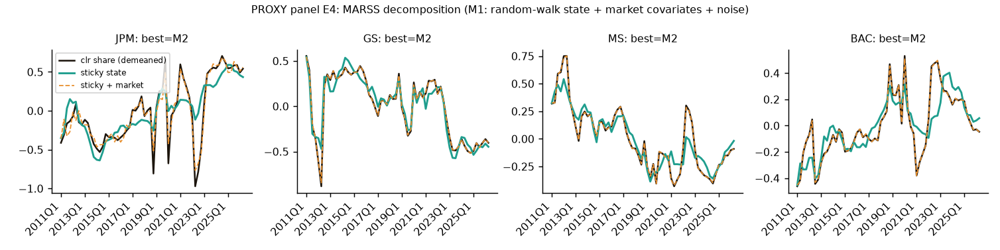
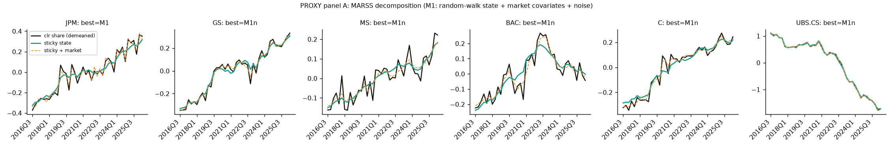
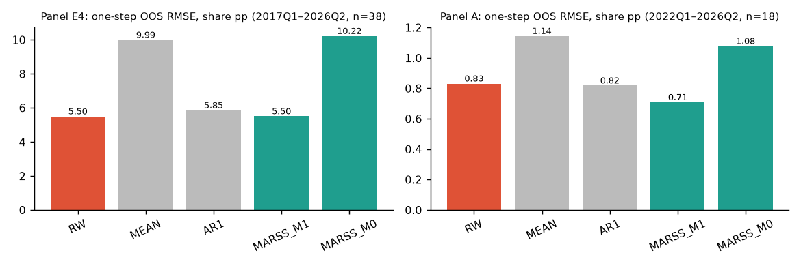
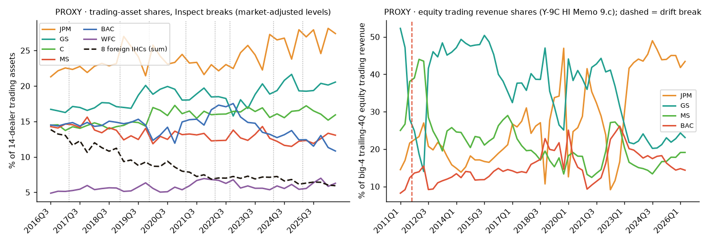
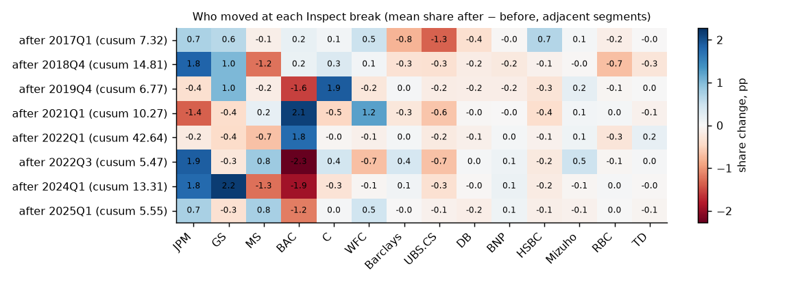
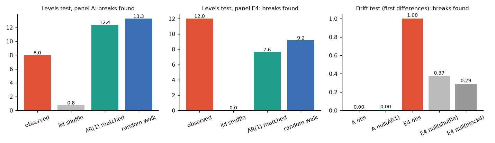

Methods scout
Two lesser-known, fast, interpretable methods for one question: when a dealer's share moves, is it the market or a sticky migration? Run on a clearly labelled PROXY panel, because top-25 prime-broker data isn't in Drive.
The short version
- Data first. Q1 asks about the top 25 prime brokers. There is no per-firm prime-brokerage revenue, balance or market-share data in Drive or on the box (searched below; the Drive README for the hedge-fund leverage folder says the Coalition Greenwich league tables are paywalled). Everything here runs on a PROXY: public FR Y-9C filings for the largest US dealer holding companies and foreign-bank IHCs. Trading assets stand in for "activity/balance share" (14 dealers, 2016Q3–2026Q2) and equity trading revenue (HI Memo 9.c) for "revenue share" (JPM, GS, MS, BAC, 2011Q1–2026Q2). Neither is prime brokerage.
- MARSS (state-space, R Journal 2012) recommend for promote workflow. It splits each dealer's log-ratio share into a market-driven part (VIX, Nasdaq return, industry growth), a sticky random-walk state and transient noise, and AICc compares "sticky", "mean-reverting" and "no sticky" versions. On the revenue proxy, market factors drive most quarter-to-quarter moves for JPM, MS and BAC. GS is the exception: its fall from 52% to 23% of big-4 equity trading revenue sits almost entirely in the sticky state, and those sticky losses line up with JPM's gains. The caveat is sample length: a matched-persistence null shows AICc can tell sticky from slow mean reversion at 62 quarters, but not reliably at 40.
- InspectChangepoint (sparse-projection change points, JRSS-B 2018) interesting. It's fast (9.6 ms per 14×40 panel), and the projection vector says which dealers moved at a break. But on share levels it finds 8 breaks while AR(1) and random-walk surrogates with the same persistence average 12.4–13.3. Run on first differences (a change in migration speed), it finds 0 breaks in the trading-asset panel and 1 non-significant break in revenue shares. So there is no evidence of abrupt regime breaks in the proxy, only gradual persistent drift.
Where the question stands
Q1 (2026-11-10): “How have prime broker revenue/activity share dynamics changed among the top 25 brokers and how can we gain insight into market based ones vs real sticky share migration?”
Progress (PROXY only). (1) Method: a state-space split into market, sticky and transient parts, with a persistence-matched null, works and is cheap. The matching change-point tool mainly tells us there are no abrupt breaks. (2) Proxy findings: in the US dealer balance-sheet proxy, share moved steadily from foreign IHCs (−7.9pp) to JPM (+6.1pp), GS (+3.8pp) and C, and market covariates account for almost none of that net shift (market part of net clr change ≤0.05 in absolute value for every dealer). That looks like sticky migration. In the equity-revenue proxy, quarter-to-quarter swings are mostly market-driven, apart from a persistent GS→JPM shift. (3) Missing: real per-firm prime-brokerage revenue and balances for the top 25 (see the data box). Status: in progress.
Searched (Drive connectors on the main and personal accounts, plus the xai Drive connector): “prime broker”, “prime services”, “prime brokerage”, “securities lending”, “market share”, “financing balances”, “broker revenue”, “equities financing”, “Coalition Greenwich”, “Y-9C”, “trading revenue”, “broker-dealer FOCUS”. Also checked the box for Y-9C, call-report and Form PF panels. X search found no method leads and no data. One post repeats an unsourced “80% share” claim for the top 3, which we did not use.
Found and relevant, but not top-25 per-firm PB data: GS and MS 10-K/10-Q/supplement markdown (2 firms, 2023–2026; segment text only); SEC Form PF aggregates (README: Tab 8.28 prime-broker borrowings, aggregate, not by broker; the panel CSV wasn't found by exact name on Drive); SCOOS dealer-survey text (qualitative); NY Fed fails and OFR repo (market plumbing, not firm shares); FDIC call-report top-100 (bank charters, no PB items); OCC quarterly derivatives reports 2016–2026 (PDF tables of top holding companies by derivatives; not parsed today).
Used as PROXY: the FR Y-9C trading panel (BHCK3545 trading assets; BHCK8759 equity trading revenue), aggregated to dealer shares.
MARSS: market vs sticky vs transient share moves, as a state-space model
Citation. Holmes, E. E., Ward, E. J. & Wills, K. (2012), “MARSS: Multivariate Autoregressive State-space Models for Analyzing Time-series Data”, The R Journal 4(1):11–19. Package: cran.r-project.org/package=MARSS (v3.11.10, 2025-09; ~1.5k downloads/month; NOAA fisheries authors; long user guide with worked examples and a test suite). It comes from ecology, where it's used to split population counts into process and observation noise, and it's rarely used in finance.
Target question. Q1: is a dealer's share move market-driven (it moves with VIX, equity returns or industry size and comes back), sticky (a permanent random-walk shift), or transient noise?
Why it's good and fast. One model gives a variance split, a net-change attribution and a likelihood test of “sticky vs mean-reverting vs no sticky component”, with covariates in the observation equation so market effects are kept out of the sticky state. Each univariate fit takes about 0.2–1 s (short EM warm start, then BFGS on the Kalman likelihood). The whole edition, about 4,000 model selections including the nulls and walk-forward, ran in 11 minutes on a shared box.
The math in plain terms
For dealer \(i\), take the centred log-ratio share \(y_{it}=\log s_{it}-\tfrac1N\sum_j\log s_{jt}\) (shares live on a simplex; clr maps them to ordinary space). Then
\(x_t\) is the sticky state. \(D^\top d_t\) is the market part, with \(d_t\) = standardized VIX, 4-quarter Nasdaq return and industry growth; it reverts when the market reverts. \(v_t\) is transient. We compare four models by AICc: M0 (\(q=0\): no sticky state), M1 (\(b=1\): random-walk sticky state), M1n (M1 without market covariates) and M2 (\(b<1\): mean-reverting, half-life \(\log 0.5/\log b\) quarters). From the smoothed M1 we report the variance of quarterly changes in each part, and the net change over the sample split as sticky + market + transient.
Analysis 1a · Q1-directed: decompose each dealer's share (both proxies)
Revenue proxy E4: JPM, GS, MS, BAC shares of big-4 trailing-4-quarter equity trading revenue, 2011Q1–2026Q2 (62 quarters). Citi is excluded because its 4-quarter equity trading revenue is negative in some quarters, and log-ratios need positive parts.

| Dealer | Best (AICc) | M0 | M1 | M1n | M2 | M2 b | Half-life (q) | Var. of Δ: sticky / market / transient | Net clr change = sticky + market + transient |
|---|---|---|---|---|---|---|---|---|---|
| JPM | M2 | 53.5 | 1.3 | 34.1 | 0.2 | 0.854 | 4.4 | 13% / 59% / 28% | 0.95 = 0.79 + 0.13 + 0.04 |
| GS | M2 | 48.2 | -15.6 | -9.7 | -19.3 | 0.817 | 3.4 | 78% / 22% / 1% | -0.96 = -0.99 + 0.04 + -0.01 |
| MS | M2 | 6.0 | -110.2 | -67.8 | -110.6 | 0.920 | 8.4 | 38% / 62% / 1% | -0.41 = -0.34 + -0.08 + 0.01 |
| BAC | M2 | -12.3 | -115.5 | -50.0 | -119.0 | 0.869 | 5.0 | 26% / 74% / 0% | 0.41 = 0.51 + -0.11 + 0.01 |
What it shows. Adding market covariates improves AICc sharply for BAC, MS and JPM (M1 vs M1n: -66, -42, -33), and market moves are 74%, 62% and 59% of their quarterly variance. For these three, most revenue-share swings are the market. GS is different: only 22% is market-driven, and nearly all of its net decline (-0.96 clr) is in the sticky state. All four prefer M2 (slow mean reversion, half-lives 3.4–8.4 quarters), but only narrowly over M1 (by 0.5–3.6 AICc points), so “permanent” vs “reverts over 1–2 years” isn't settled.
Who took share from whom. Correlations of the sticky-state increments, with a circular-shift null that keeps each series' autocorrelation. A 4-part clr has a built-in correlation of about -0.333.
| Pair | Corr. of sticky increments | one-sided p (circular shift, 1,000) | BH q |
|---|---|---|---|
| JPM ↔ GS | -0.793 | 0.019 | 0.038 |
| JPM ↔ MS | -0.334 | 0.016 | 0.038 |
| JPM ↔ BAC | -0.299 | 0.015 | 0.038 |
| GS ↔ MS | -0.078 | 0.270 | 0.405 |
The GS↔JPM correlation (-0.79) is far below the -0.333 built-in level and survives BH. In this proxy, GS's sticky losses went to JPM.
Balance/activity proxy A: shares of trading assets across 14 dealer holding companies (6 US, 8 foreign-bank IHCs; UBS and Credit Suisse combined to stay merger-consistent), 2016Q3–2026Q2 (40 quarters).

All 14 dealers: AICc, half-life, variance split and net change
| Dealer | Best (AICc) | M0 | M1 | M1n | M2 | M2 b | Half-life (q) | Var. of Δ: sticky / market / transient | Net clr change = sticky + market + transient |
|---|---|---|---|---|---|---|---|---|---|
| JPM | M1 | -16.4 | -91.0 | -71.0 | -88.8 | 0.964 | 18.7 | 5% / 72% / 22% | 0.72 = 0.65 + 0.01 + 0.07 |
| GS | M1n | -13.9 | -93.0 | -97.9 | -91.0 | 0.961 | 17.3 | 31% / 11% / 58% | 0.68 = 0.64 + 0.02 + 0.02 |
| MS | M1n | -60.6 | -96.4 | -102.1 | -93.9 | 0.960 | 16.8 | 3% / 5% / 92% | 0.38 = 0.33 + -0.00 + 0.06 |
| BAC | M1n | -44.2 | -83.3 | -87.1 | -84.5 | 0.903 | 6.8 | 10% / 12% / 79% | 0.18 = 0.24 + -0.04 + -0.01 |
| C | M1n | -20.0 | -105.0 | -105.1 | -103.3 | 0.962 | 17.9 | 15% / 24% / 61% | 0.57 = 0.50 + 0.03 + 0.03 |
| WFC | M1 | -8.6 | -88.9 | -81.9 | -88.6 | 0.924 | 8.8 | 47% / 46% / 7% | 0.72 = 0.76 + -0.05 + 0.01 |
| Barclays | M1n | -9.3 | -33.3 | -34.0 | -33.4 | 0.854 | 4.4 | 20% / 29% / 51% | -0.10 = -0.07 + 0.01 + -0.03 |
| UBS+CS | M1n | 113.9 | -33.0 | -37.5 | -30.6 | 1.018 | ∞ | 89% / 11% / 0% | -2.83 = -2.81 + -0.02 + 0.00 |
| DB | M1n | -27.6 | -57.1 | -61.6 | -56.2 | 0.898 | 6.4 | 2% / 9% / 89% | -0.75 = -0.50 + -0.04 + -0.20 |
| BNP | M1n | 13.1 | -42.1 | -46.2 | -39.4 | 0.970 | 22.5 | 53% / 16% / 32% | 0.23 = 0.32 + -0.05 + -0.04 |
| HSBC | M1n | 13.7 | -28.8 | -35.8 | -26.6 | 0.947 | 12.6 | 12% / 2% / 87% | 0.00 = -0.13 + 0.03 + 0.10 |
| Mizuho | M1 | 62.3 | -40.9 | -35.8 | -39.1 | 0.959 | 16.5 | 45% / 48% / 7% | 1.31 = 1.26 + 0.02 + 0.03 |
| RBC | M1n | 57.0 | -12.3 | -16.9 | -11.5 | 0.938 | 10.8 | 27% / 12% / 61% | -1.09 = -1.13 + 0.05 + -0.01 |
| TD | M1n | -13.6 | -21.4 | -28.0 | -21.9 | 0.729 | 2.2 | 11% / 4% / 85% | -0.02 = -0.00 + 0.02 + -0.04 |
What it shows. For balances, market covariates mostly don't help: AICc prefers M1n (no market) for 11 of 14 dealers. Share moves are sticky plus quarter-end noise. The large net moves are almost all sticky: UBS+CS -2.83 clr (sticky -2.81), Mizuho 1.31 (sticky 1.26), RBC -1.09, JPM 0.72 (sticky 0.65). No firm-to-firm pair survives BH correction here (best q = 0.31).
Top sticky-increment pairs, trading-asset panel
| Pair | Corr. of sticky increments | one-sided p (circular shift, 1,000) | BH q |
|---|---|---|---|
| C ↔ TD | -0.497 | 0.023 | 0.307 |
| BAC ↔ Barclays | -0.490 | 0.023 | 0.307 |
| JPM ↔ TD | -0.478 | 0.019 | 0.307 |
| WFC ↔ TD | -0.454 | 0.046 | 0.435 |
| DB ↔ HSBC | -0.369 | 0.067 | 0.435 |
| Barclays ↔ HSBC | -0.358 | 0.025 | 0.307 |
Analysis 1b · Stability across windows
| Dealer | Best 2011–17 | Best 2018–26 | Sticky / market var. 2011–17 | Sticky / market var. 2018–26 | M2 b 2011–17 | M2 b 2018–26 |
|---|---|---|---|---|---|---|
| JPM | M1n | M2 | 88% / 12% | 2% / 78% | 0.95 | 0.77 |
| GS | M2 | M1 | 38% / 62% | 64% / 36% | 0.68 | 0.89 |
| MS | M1 | M2 | 19% / 72% | 31% / 69% | 0.83 | 0.64 |
| BAC | M2 | M2 | 43% / 57% | 23% / 77% | 0.64 | 0.81 |
| Dealer | Best 2016Q3–21Q2 | Best 2021Q3–26Q2 | Sticky / market var. 2016Q3–21Q2 | Sticky / market var. 2021Q3–26Q2 | M2 b 2016Q3–21Q2 | M2 b 2021Q3–26Q2 |
|---|---|---|---|---|---|---|
| JPM | M1 | M1 | 5% / 68% | 4% / 83% | 0.87 | 0.99 |
| GS | M1n | M1n | 62% / 12% | 4% / 21% | 0.91 | 0.94 |
| MS | M0 | M1n | 0% / 32% | 92% / 8% | 0.69 | 0.72 |
| BAC | M1n | M1 | 6% / 36% | 2% / 42% | 0.91 | 0.96 |
| C | M1n | M1n | 11% / 41% | 88% / 12% | 0.97 | 0.78 |
| WFC | M1n | M1 | 34% / 35% | 37% / 62% | 0.87 | 0.90 |
| Barclays | M1n | M1n | 14% / 54% | 27% / 33% | 0.63 | 0.83 |
| UBS+CS | M1n | M1n | 94% / 6% | 60% / 40% | 0.77 | 0.97 |
| DB | M1n | M1n | 27% / 25% | 0% / 10% | 0.58 | 0.60 |
| BNP | M1n | M1n | 53% / 42% | 85% / 11% | 0.66 | 0.95 |
| HSBC | M1n | M1n | 6% / 33% | 51% / 46% | 0.71 | 0.76 |
| Mizuho | M1 | M1 | 33% / 67% | 42% / 58% | 0.87 | 0.81 |
| RBC | M1n | M1n | 44% / 52% | 35% / 34% | 0.91 | 0.69 |
| TD | M1n | M2 | 5% / 22% | 26% / 18% | 0.53 | 0.51 |
What it shows. The decomposition is not stable for every dealer. JPM's revenue share was mostly sticky in 2011–17 (88% of variance) and mostly market-driven in 2018–26 (78%). GS's sticky share of variance rose (38% → 64%). The 20-quarter halves of the trading-asset panel are too short to compare reliably (see 1d). Read the split as “what happened in this window”, not as a fixed property of a firm.
Analysis 1c · Versus plain baselines, honest out of sample
Expanding window, refit each quarter, one quarter ahead. This is a nowcast: market covariates for quarter \(t+1\) are known at quarter end, about 40 days before the Y-9C is published. Covariates are standardized with training-window statistics only.

| Forecast | RMSE, clr units | RMSE, share pp |
|---|---|---|
| Random walk (last share) | 0.2363 | 5.495 |
| Expanding mean | 0.3810 | 9.988 |
| AR(1) to window mean | 0.2397 | 5.851 |
| MARSS M0 (market only, no sticky state) | 0.3655 | 10.220 |
| MARSS M1 (sticky + market) | 0.2125 | 5.504 |
| Forecast | RMSE, clr units | RMSE, share pp |
|---|---|---|
| Random walk (last share) | 0.1165 | 0.831 |
| Expanding mean | 0.4774 | 1.144 |
| AR(1) to window mean | 0.1277 | 0.818 |
| MARSS M0 (market only, no sticky state) | 0.4862 | 1.078 |
| MARSS M1 (sticky + market) | 0.1368 | 0.708 |
What it shows. Mixed, so no forecasting claim. On revenue shares MARSS M1 has a 10% lower clr RMSE than the random walk, but ties it in share points (5.50 vs 5.50pp). On trading assets it's 15% better in share points but worse in clr units, because it misses the small dealers. The model with no sticky state (M0) is far worse in both panels (10.22pp and 1.08pp). That is the clearest out-of-sample evidence that a persistent, sticky component is real.
Analysis 1d · Matched-persistence null: does AICc cry “sticky” on stationary data?
For each dealer we simulated 40 stationary AR(1) series with the real series' lag-1 persistence and noise, and 40 true random walks, then ran the same M0/M1/M2 selection with the real covariates.
| Panel | Dealer | AR(1) φ matched | False "sticky" (M1 picked on stationary AR) | Power (M1 picked on a true random walk) | Real-data pick |
|---|---|---|---|---|---|
| E4 | JPM | 0.72 | 0% | 62% | M2 |
| E4 | GS | 0.79 | 2% | 65% | M2 |
| E4 | MS | 0.88 | 18% | 60% | M2 |
| E4 | BAC | 0.75 | 2% | 57% | M2 |
| A | JPM | 0.84 | 45% | 80% | M1 |
| A | GS | 0.93 | 32% | 68% | M1n |
| A | MS | 0.75 | 22% | 68% | M1n |
| A | BAC | 0.80 | 15% | 70% | M1n |
| A | C | 0.92 | 42% | 68% | M1n |
| A | WFC | 0.88 | 38% | 65% | M1 |
| A | UBS+CS | 0.95 | 65% | 50% | M1n |
| A | DB | 0.68 | 18% | 60% | M1n |
| A | BNP | 0.93 | 48% | 55% | M1n |
What it shows. With 62 quarters (E4), AICc rarely calls a stationary series sticky (0–18%) and finds a true random walk 58–65% of the time, so the classification is informative. With 40 quarters (A) it calls stationary series sticky 15–65% of the time, so per-dealer “sticky vs slow mean reversion” labels on the 2016–26 balance panel are not trustworthy. The net-change attribution and the M0 out-of-sample failure still are.
Limitations
- PROXY data. Y-9C trading assets and the equity trading-revenue memo line are not prime-brokerage revenue or balances. GS and MS book much of their prime revenue as net interest and commissions, not trading revenue.
- Univariate fits on clr coordinates ignore the sum-to-zero link between dealers. A joint MARSS with a structured \(Q\) is the next step once there's a longer panel.
- Below about 60 quarters, sticky vs slow mean reversion can't be told apart (1d). Decompositions shift between windows (1b).
Verdict: recommend for promote workflow (recommendation only; nothing is promoted without Jared's approval). It's the right shape for Q1, fast, readable, and it carries its own falsification test. Required in any skill: the matched-persistence null and a minimum sample length.
InspectChangepoint: which dealers moved, and when?
Citation. Wang, T. & Samworth, R. J. (2018), “High dimensional change point estimation via sparse projection”, Journal of the Royal Statistical Society: Series B 80(1):57–83. Package: cran.r-project.org/package=InspectChangepoint (v1.2, 2022-05; ~450 downloads/month; pure R, imports only MASS; the authors' own implementation).
Target question. Q1: was there a discrete moment when share migrated between specific dealers (an exit, a blow-up, a client transfer), and who was involved?
Why it's good and fast. Most multivariate change-point methods tell you when. Inspect also tells you which coordinates: it finds the sparse direction along which the panel's mean shifted, so each break comes with a short list of dealers that gained or lost. It's a convex relaxation solved by SVD, at 9.6 ms per 14×40 panel.
The math in plain terms
Stack the \(p\) dealers' standardized series into \(X\in\mathbb R^{p\times n}\) and form its CUSUM transform \(T\) (column \(t\) compares the mean before and after \(t\)). A mean change in a sparse set of coordinates makes \(T\approx\theta\gamma^\top\), rank one with sparse \(\theta\). Inspect estimates the direction by
It projects the data onto \(\hat v\), runs a univariate CUSUM and recurses with wild binary segmentation. The loadings \(\hat v\) are the “who moved” vector. Noise is assumed independent over time; that assumption is what we test.
Analysis 2a · Q1-directed: breaks and who moved (trading-asset panel)

| Break after | Projected CUSUM | Projection direction (top 4 loadings) | Biggest share moves (adjacent segments) |
|---|---|---|---|
| 2017Q1 | 7.32 | WFC +0.58, DB -0.46, UBS+CS -0.36, Barclays -0.34 | UBS+CS -1.34pp, Barclays -0.77pp, JPM +0.72pp |
| 2018Q4 | 14.81 | GS +0.55, JPM +0.53, RBC -0.41, WFC +0.36 | JPM +1.82pp, MS -1.23pp, GS +1.02pp |
| 2019Q4 | 6.77 | JPM -0.66, TD +0.47, HSBC -0.41, RBC +0.27 | C +1.90pp, BAC -1.55pp, GS +1.02pp |
| 2021Q1 | 10.27 | Barclays -0.49, BAC +0.48, WFC +0.40, HSBC -0.28 | BAC +2.13pp, JPM -1.37pp, WFC +1.23pp |
| 2022Q1 | 42.64 | TD +0.97, BNP +0.19, WFC -0.08, DB -0.07 | BAC +1.76pp, MS -0.66pp, GS -0.41pp |
| 2022Q3 | 5.47 | RBC -0.66, Mizuho +0.59, HSBC -0.36, C +0.28 | BAC -2.28pp, JPM +1.88pp, MS +0.83pp |
| 2024Q1 | 13.31 | GS +0.63, HSBC -0.57, BNP +0.47, UBS+CS -0.18 | GS +2.17pp, BAC -1.91pp, JPM +1.78pp |
| 2025Q1 | 5.55 | MS +0.88, WFC +0.39, UBS+CS -0.22, HSBC -0.11 | BAC -1.17pp, MS +0.76pp, JPM +0.74pp |

What it shows, taken at face value. The strongest coherent event is after 2018Q4: JPM +1.8pp and GS +1.0pp; MS −1.2pp and RBC −0.7pp; 7 of 14 dealers also have a univariate break within a quarter. The 2017Q1 break loads on DB, UBS+CS and Barclays losing share. The 2024Q1 break is GS +2.2pp and JPM +1.8pp against BAC and MS. These are plausible stories, but analysis 2b says not to trust them as breaks.
Analysis 2b · Null that keeps the persistence: are these breaks real?

| Panel / test | Observed breaks | iid shuffle (mean, P≥obs) | AR(1)-matched (mean, P≥obs) | Random walk (mean, P≥obs) |
|---|---|---|---|---|
| A · levels, market-adjusted (n=40, p=14) | 8 | 0.76, 0.000 | 12.39, 1.000 | 13.28, 1.000 |
| E4 · levels, market-adjusted (n=62, p=4) | 12 | 0.04, 0.000 | 7.63, 0.005 | 9.15, 0.075 |
What it shows. On trading-asset shares the lag-1 persistence is about 1 (unit root), and persistence-only surrogates produce more breaks (12.4 and 13.3) than the real data (8). The level breaks are what a persistent series does under a test that assumes independent noise; they aren't evidence of discrete events. On revenue shares the real panel has more breaks than AR(1) surrogates (p = 0.005) but not more than random walks (p = 0.075). This is the same lesson as yesterday's changeforest levels artifact.
Analysis 2c · The right test for sticky migration: did the speed of migration change?
Run on first differences of market-adjusted log-ratio shares, a break is a change in drift: the start or end of a sustained migration. iid, block-of-4 and AR(1) nulls on the differences.
| Panel / drift test (first differences) | Observed | iid shuffle (mean, P≥obs) | Block-4 shuffle (mean, P≥obs) | AR(1)-matched (mean, P≥obs) |
|---|---|---|---|---|
| A | 0 | 0.25, 1.000 | 0.04, 1.000 | 0.00, 1.000 |
| E4 | 1 | 0.37, 0.240 | 0.29, 0.220 | 0.01, 0.010 |
| Break after | Projected CUSUM | Segment | Projection direction |
|---|---|---|---|
| 2011Q3 | 5.34 | 2011Q2 → 2026Q2 | GS +0.97, MS -0.18, JPM -0.13, BAC -0.06 |
What it shows. No drift breaks in the trading-asset panel. One in revenue shares (after 2011Q3, GS-loaded), which the iid and block nulls produce 24% and 22% of the time, so it isn't significant. Read with MARSS, the picture is gradual, persistent drift (the foreign-IHC retreat, GS→JPM), not a handful of discrete shocks. Quarterly differences in trading-asset shares are strongly negatively autocorrelated (lag-1 between −0.10 and −0.55, median about −0.43), which points to quarter-end window dressing: transient noise that a sticky-share analysis must filter.
Analysis 2d · Versus univariate baseline, and timing
Baseline: strucchange::breakpoints mean-shift per dealer (BIC). It found 43 breaks across 14 dealers, against 8 panel breaks from Inspect. Real-time: the extra quarters needed before an expanding-window Inspect run flags the same break (±1q).
| Inspect break (A, market-adjusted) | Firms with a univariate strucchange break within ±1q (of 14) | Real-time delay (quarters of extra data needed) |
|---|---|---|
| 2017Q1 | 3 | 2 |
| 2018Q4 | 7 | 2 |
| 2019Q4 | 3 | 2 |
| 2021Q1 | 6 | 2 |
| 2022Q1 | 5 | 2 |
| 2022Q3 | 3 | 4 |
| 2024Q1 | 3 | 3 |
| 2025Q1 | 4 | 5 |
Inspect gives a much sparser, cross-dealer summary than 14 separate tests, and it flags a break 2–5 quarters after it happens. But the same persistence caveat applies to the baseline.
Limitations
- Assumes independent noise and a piecewise-constant mean. Share levels violate both, so the level breaks fail a persistence-matched null.
- Noise scale is estimated from differences (MAD/√2). On smooth trailing-4Q revenue sums this understates noise and over-segments.
- Last CRAN release 2022 (stable, not active). Small user base.
Verdict: interesting. Keep it as the “who moved” readout once a break has been shown to clear a persistence null, ideally on monthly balance data where breaks (exits, blow-ups, client transfers) would be sharper. Not recommended for the promote workflow on today's evidence.
Watch list (new today)
- not (Narrowest-Over-Threshold; Baranowski, Chen & Fryzlewicz, JRSS-B 2019; CRAN v1.6, ~390 dl/mo; obscure). Piecewise-linear change points: it detects when a migration trend starts or stops, which is the sticky-share signal.
- mosum (Meier, Kirch & Cho, JSS 2021; CRAN v1.2.7, ~570 dl/mo; niche). Moving-sum change points with bandwidth-driven localisation and a multiscale merge. A fast mean-change baseline with real theory.
- coda.base (Comas-Cufí; CRAN v1.0.6, 2026-05; ~870 dl/mo; niche). ilr bases and principal balances. Would replace hand-rolled clr with interpretable “IHCs vs US big-6” balance coordinates.
- DirichletReg (Maier; CRAN v0.7-4, 2026-10; ~5.7k dl/mo; niche). Regress the whole share vector on market covariates. A direct check of the MARSS market loadings.
- KFAS (Helske, JSS 2017; CRAN v1.6.0; ~7k dl/mo; well-known). Exact-diffuse Kalman filtering. A cross-check of MARSS fits and a faster engine for a joint multivariate model.
What data would answer Q1 properly
- Per-firm prime-brokerage revenue for the top 25 (quarterly, 2010+): Coalition Greenwich or similar league tables (paywalled; not in Drive), or Jared's internal competitor series.
- Per-firm client balances: margin and financing debits, synthetic and swap financing notional, short balances, monthly if possible.
- Relationship counts (the cleanest sticky-migration signal): the number and GAV of hedge funds naming each firm as prime broker. A free route exists: SEC Form ADV Schedule D, Section 7.B.(1) lists each private fund's prime brokers. Building that panel is a separate data task.
- With any one of these, both methods rerun unchanged:
prep.pyonly needs a firm × quarter matrix.